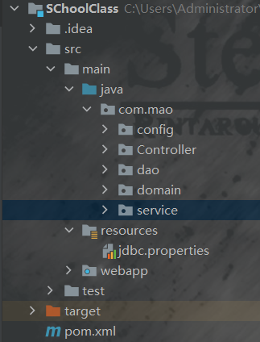

Spring简介     Spring认证框架是一个开放源代码的J2EE应用程序框架，由Rod Johnson发起，是针对bean的生命周期进行管理的轻量级容器（lightweight container）。
    Spring是Java EE编程领域的一个轻量级开源框架，该框架由一个叫Rod Johnson的程序员在 2002 年最早提出并随后创建，是为了解决企业级编程开发中的复杂性，实现敏捷开发的应用型框架 。
IOC(控制翻转) ioc(控制翻转),即将对象交给容器统一管理从而松耦合，由ioc容器寻找注入依赖的对象
流程 在maven中导入坐标 1 2 3 4 5 6 7 8 9 10 11 12 13 14 15 16 17 18 19 20 21 22 23 24 25 26 27 28 29 30 31 32 33 34 35 36 37 38 39 40 41 42 43 44 45 46 47 48 49 50 51 52 53 54 55 56 57 58 59 60 61 62 63 64 65 66 67 68 69 70 71 72 73 74 75 76 77 78 79 80 81 82 83 84 85 86 87 88 89 90 91 92 93 94 95 96 97 <?xml version="1.0" encoding="UTF-8" ?> <project xmlns ="http://maven.apache.org/POM/4.0.0" xmlns:xsi ="http://www.w3.org/2001/XMLSchema-instance" xsi:schemaLocation ="http://maven.apache.org/POM/4.0.0 http://maven.apache.org/xsd/maven-4.0.0.xsd" > <modelVersion > 4.0.0</modelVersion > <groupId > org.example</groupId > <artifactId > javamvc</artifactId > <version > 1.0-SNAPSHOT</version > <packaging > war</packaging > <properties > <project.build.sourceEncoding > UTF-8</project.build.sourceEncoding > <maven.compiler.source > 1.8</maven.compiler.source > <maven.compiler.target > 1.8</maven.compiler.target > </properties > <dependencies > <dependency > <groupId > javax.servlet</groupId > <artifactId > javax.servlet-api</artifactId > <version > 3.1.0</version > <scope > provided</scope > </dependency > <dependency > <groupId > org.springframework</groupId > <artifactId > spring-webmvc</artifactId > <version > 5.2.10.RELEASE</version > </dependency > <dependency > <groupId > com.fasterxml.jackson.core</groupId > <artifactId > jackson-databind</artifactId > <version > 2.9.0.pr1</version > </dependency > <dependency > <groupId > org.springframework</groupId > <artifactId > spring-jdbc</artifactId > <version > 5.2.10.RELEASE</version > </dependency > <dependency > <groupId > org.springframework</groupId > <artifactId > spring-test</artifactId > <version > 5.2.10.RELEASE</version > </dependency > <dependency > <groupId > org.mybatis</groupId > <artifactId > mybatis</artifactId > <version > 3.5.6</version > </dependency > <dependency > <groupId > org.mybatis</groupId > <artifactId > mybatis-spring</artifactId > <version > 1.3.0</version > </dependency > <dependency > <groupId > mysql</groupId > <artifactId > mysql-connector-java</artifactId > <version > 5.1.47</version > </dependency > <dependency > <groupId > com.alibaba</groupId > <artifactId > druid</artifactId > <version > 1.1.16</version > </dependency > <dependency > <groupId > junit</groupId > <artifactId > junit</artifactId > <version > 4.12</version > <scope > test</scope > </dependency > </dependencies > <build > <plugins > <plugin > <groupId > org.apache.tomcat.maven</groupId > <artifactId > tomcat7-maven-plugin</artifactId > <version > 2.1</version > <configuration > <port > 80</port > <path > /</path > </configuration > </plugin > </plugins > </build > </project >
SpringConfig 创建spring配置类 1 2 3 4 5 6 7 8 9 10 11 12 13 14 15 16 17 18 package com.mao.config; import org.springframework.context.annotation.ComponentScan;import org.springframework.context.annotation.Configuration;import org.springframework.context.annotation.Import;import org.springframework.context.annotation.PropertySource;@Configuration @ComponentScan("com.mao.service") @PropertySource("classpath:/jdbc.properties") @Import({JdbcConfig.class,MybatisConfig.class}) public class SpringConfig {}
Jdbc配置类 1 2 3 4 5 6 7 8 9 10 11 12 13 14 15 16 17 18 19 20 21 22 public class JdbcConfig { @Value("${jdbc.driver}") public String driver; @Value("${jdbc.url}") public String url; @Value("${jdbc.username}") public String name; @Value("${jdbc.password}") public String password; @Bean public DataSource dataSource () { DruidDataSource dataSource = new DruidDataSource (); dataSource.setDriverClassName(driver); dataSource.setUrl(url); dataSource.setUsername(name); dataSource.setPassword(password); return dataSource; } }
Mybatis配置类 1 2 3 4 5 6 7 8 9 10 11 12 13 14 15 16 17 18 19 20 21 22 23 24 25 26 27 28 29 30 31 32 33 package com.mao.config;import org.mybatis.spring.SqlSessionFactoryBean;import org.mybatis.spring.mapper.MapperScannerConfigurer;import org.springframework.context.annotation.Bean;import javax.sql.DataSource;public class MybatisConfig { @Bean public SqlSessionFactoryBean sqlSessionFactoryBean (DataSource dataSource) { SqlSessionFactoryBean sqlSessionFactoryBean = new SqlSessionFactoryBean (); sqlSessionFactoryBean.setDataSource(dataSource); sqlSessionFactoryBean.setTypeAliasesPackage("com.mao.domain" ); return sqlSessionFactoryBean; } @Bean public MapperScannerConfigurer mapperScannerConfigurer () { MapperScannerConfigurer mapperScannerConfigurer = new MapperScannerConfigurer (); mapperScannerConfigurer.setBasePackage("com.mao.dao" ); return mapperScannerConfigurer; } }
创建配置文件，就是上面导入的那个 jdbc.properties
1 2 3 4 jdbc.driver=com.mysql.jdbc.Driver jdbc.url=jdbc:mysql://localhost:3306/School?useSSL=false jdbc.username=root jdbc.password=maoxinkai
文件格式大概是这个样子的

SpringMvc 配置类 1 2 3 4 5 6 7 8 9 10 11 12 13 14 15 package com.mao.config;import org.springframework.context.annotation.ComponentScan;import org.springframework.context.annotation.Configuration;import org.springframework.web.servlet.config.annotation.EnableWebMvc;@Configuration @ComponentScan({"com.mao.Controller","com.mao.config"}) @EnableWebMvc public class SpringMVConfig {}
serviseControllerconfig.java MVC容器配置 1 2 3 4 5 6 7 8 9 10 11 12 13 14 15 16 17 18 19 20 21 22 23 24 25 26 27 28 29 30 31 32 33 34 35 36 37 38 import org.springframework.web.filter.CharacterEncodingFilter;import org.springframework.web.servlet.support.AbstractAnnotationConfigDispatcherServletInitializer;import javax.servlet.Filter;public class serviseControllerconfig extends AbstractAnnotationConfigDispatcherServletInitializer { @Override protected Class<?>[] getRootConfigClasses() { return new Class []{SpringConfig.class}; } @Override protected Class<?>[] getServletConfigClasses() { return new Class []{SpringMVConfig.class}; } @Override protected String[] getServletMappings() { return new String []{"/" }; } @Override protected Filter[] getServletFilters() { CharacterEncodingFilter filter = new CharacterEncodingFilter (); filter.setEncoding("UTF-8" ); return new Filter []{filter}; } }
配置类终于写完了 <(︶)>
接下是持久层Dao 持久层接口 1 2 3 4 5 6 7 8 9 10 11 12 13 14 15 16 17 18 19 20 21 22 23 24 25 26 27 package com.mao.dao;import com.mao.domain.teacher;import org.apache.ibatis.annotations.Delete;import org.apache.ibatis.annotations.Insert;import org.apache.ibatis.annotations.Select;import org.apache.ibatis.annotations.Update;import java.util.List;public interface TeacherDao { @Insert("insert into teacher(`name`,`sex`,`subject`) values(#{name},#{sex},#{subject})") public void save (teacher teacher) ; @Update("update teacher set name=#{name} sex=#{sex} subject=#{subject} where id=#{id}") public void Update (teacher teacher) ; @Delete("delete from teacher where id = #{id}") public void delete (Integer id) ; @Select("select *from teacher") public List<teacher> Select () ; @Select("select * from teacher where id = #{id}") public teacher Byidselect (Integer id) ; }
在这之前要先搞好实体类
1 2 3 4 5 6 7 8 9 10 11 12 13 14 15 16 17 18 19 20 21 22 23 24 25 26 27 28 29 30 31 32 33 34 35 36 37 38 39 40 41 42 43 44 45 46 47 48 49 50 51 52 53 54 55 package com.mao.domain;public class teacher { private Integer id; private String name; private String sex; private String subject; @Override public String toString () { return "teacher{" + "id=" + id + ", name='" + name + '\'' + ", sex='" + sex + '\'' + ", subject='" + subject + '\'' + '}' ; } public Integer getId () { return id; } public void setId (Integer id) { this .id = id; } public String getName () { return name; } public void setName (String name) { this .name = name; } public String getSex () { return sex; } public void setSex (String sex) { this .sex = sex; } public String getSubject () { return subject; } public void setSubject (String subject) { this .subject = subject; } }
服务层 1 2 3 4 5 6 7 8 9 10 11 12 13 14 15 16 17 18 19 20 21 22 23 24 25 26 27 28 29 30 31 32 33 34 35 36 37 38 39 40 41 42 43 44 45 46 47 48 49 package com.mao.service;import com.mao.domain.teacher;import org.apache.ibatis.annotations.Delete;import org.apache.ibatis.annotations.Insert;import org.apache.ibatis.annotations.Select;import org.apache.ibatis.annotations.Update;import java.util.List;public interface TeacherService { public boolean save (teacher teacher) ; public boolean Update (teacher teacher) ; public boolean delete (Integer id) ; public List<teacher> Select () ; public teacher Byidselect (Integer id) ; }
接口实现 1 2 3 4 5 6 7 8 9 10 11 12 13 14 15 16 17 18 19 20 21 22 23 24 25 26 27 28 29 30 31 32 33 34 35 36 37 38 39 40 41 42 43 44 45 46 47 package com.mao.service.impl;import com.mao.dao.TeacherDao;import com.mao.domain.teacher;import com.mao.service.TeacherService;import org.springframework.beans.factory.annotation.Autowired;import org.springframework.stereotype.Service;import java.util.List;@Service public class TeacherServiceImpl implements TeacherService { @Autowired private TeacherDao teacherDao; @Override public boolean save (teacher teacher) { teacherDao.save(teacher); return true ; } @Override public boolean Update (teacher teacher) { teacherDao.Update(teacher); return true ; } @Override public boolean delete (Integer id) { teacherDao.delete(id); return true ; } @Override public List<teacher> Select () { return teacherDao.Select(); } @Override public teacher Byidselect (Integer id) { return teacherDao.Byidselect(id); } }
交互接口 1 2 3 4 5 6 7 8 9 10 11 12 13 14 15 16 17 18 19 20 21 22 23 24 25 26 27 28 29 30 31 32 33 34 35 36 37 38 39 40 41 42 43 44 45 package com.mao.Controller;import com.mao.domain.teacher;import com.mao.service.TeacherService;import com.mao.service.classtimeservice;import org.springframework.beans.factory.annotation.Autowired;import org.springframework.web.bind.annotation.*;import java.util.List;@CrossOrigin @RestController @RequestMapping("/teachers") public class TeacherController { @Autowired private TeacherService teacherService; @PostMapping public boolean save (@RequestBody teacher teacher) { return teacherService.save(teacher); } @PutMapping public boolean Update (@RequestBody teacher teacher) { return teacherService.Update(teacher); } @DeleteMapping("/{id}") public boolean delete (@PathVariable Integer id) { return teacherService.delete(id); } @GetMapping public List<teacher> Select () { System.out.println("select" ); return teacherService.Select(); } @GetMapping("/{id}") public teacher Byidselect (@PathVariable Integer id) { System.out.println("selectid" ); return teacherService.Byidselect(id); } }
Ok! 测试一下
1 2 3 4 5 6 7 8 9 10 11 12 13 14 15 16 { "data" : [ { "id" : 1 , "weekday" : "空 空 空 空 空 空 空 空 空" , "wendnesday" : "数学 英语 作文 作文 纯电维修 纯电维修 团委活动 团委活动 晚自习" , "tuserday" : "数学 语文 思政 底盘构造 计算机 计算机 自习 自习 晚自习" , "satyday" : "空 空 空 空 空 空 空 空 空" , "thursday" : "数学 语文 计算机 计算机 英语 底盘构造 课外活动 课外活动 晚自习" , "monday" : "语文 数学 英语 体育 汽电维修 汽电维修 大扫除 大扫除 自习" , "friday" : "英语 语文 体育 思政 空 空 空 空" } ] , "code" : 20041 , "msg" : null }